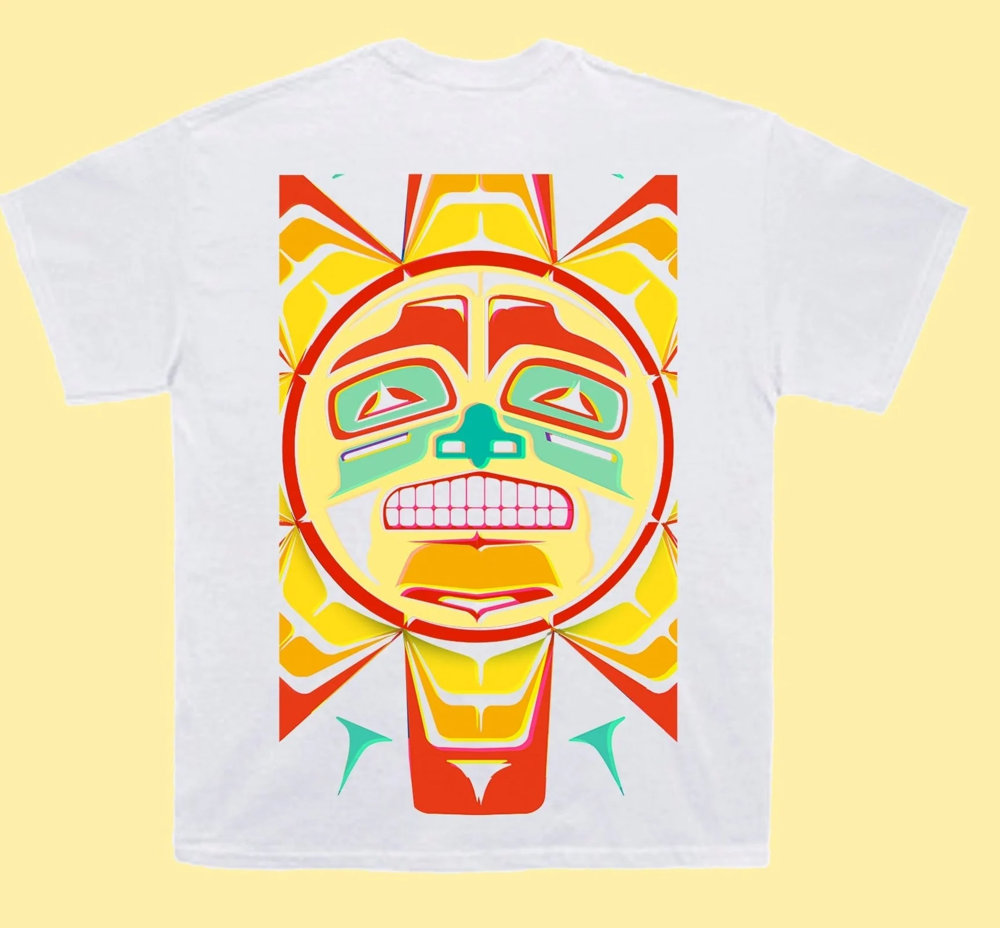

Neon Dreams
Merch
Little dance white Tea
Little dance black Tea
About
Neon Dreams is a Canadian alt-pop duo consisting of vocalist Frank Kadillac and drummer Adrian Morris. They write and produce their own music with long-time collaborator Corey Lerue. They defy genre pigeonholing, as they draw freely upon pop, rock, folk, EDM, hip-hop and reggae elements. Their most successful songs are "Marching Bands," "Survive", "High School Dropout", "Life Without Fantasies" and “Little Dance”.
The band reflects a diverse musical style combining EDM with live instrumental and vocals. They create a unique form of alternative pop music taking influence from rock, folk, EDM, hip-hop and reggae elements. They began performing together in high school at the age of 16. They are known for their high-energy live shows with both members playing multiple instruments throughout the set.
The band started in 2015 consisting of lead vocalist Frank Kadillac (born Jahmal Wellington), DJ/vocalist Corey LeRue, guitarist Matt Gats, and drummer Adrian Morris. They met in high school where Corey was a DJ while the other members were originally into rock. They spent their formative years pushing boundaries and experimenting with different musical styles. They first got recognition from rapper Waka Flocka Flame in January 2015 when they remixed his track “Hard In The Paint”. Their sound evolved into electronic with pop and rock elements as they began writing and performing. On September 4, 2015 they released their first track, “Love Experts”. It was debuted on Bell Media stations across Canada and quickly picked up by other Top-40 stations nationwide. It climbed its way onto Billboard’s CHR Top 40 chart and iTunes’ Top 10 electronic chart. Their debut EP To You was released on August 26, 2016 and accumulated over 15 million streams. It included the group's gold single "Marching Bands," featuring Kardinal Offishall. They won Best New Artist (Dance/Urban/Rhythmic) at the 2017 Canadian Radio Music Awards, beating out prominent nominees Tory Lanez and PartyNextDoor. They were also winners of the 2017 Allan Slaight JUNO Master Class. In 2017 Corey Lerue left the band to run their Halifax based Independent label Dreaming Out Loud. The label signed a distribution imprint deal with Warner Music Canada. Lerue continues to write and produce for the band. In 2018 Matt Gats left the band to take over label and managing duties. The duo released their debut album, Sweet Dreams till Sunbeams, on July 25 2019. The 9 track album was inspired by Kadillac's visit to a healing retreat in Sedona, Arizona, where he was encouraged to open up about his troubled childhood. The album featured the radio hit “High School Dropout,” which reached #20 on Canadian Top 40.
Gallery